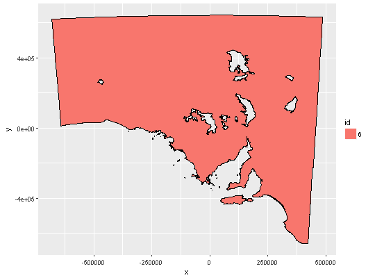

gardenstate is the geometry, a data frame with columns:
FALSE for "island" vs. "hole"branchA data frame of coordinates and geometry classifiers of the garden state, South Australia.
The PROJ.4 string for this map is:
gs <- ggplot(gardenstate) gs <- gs + aes(x = x, y = y, group = group, fill = id) gs + geom_polypath() + geom_path()